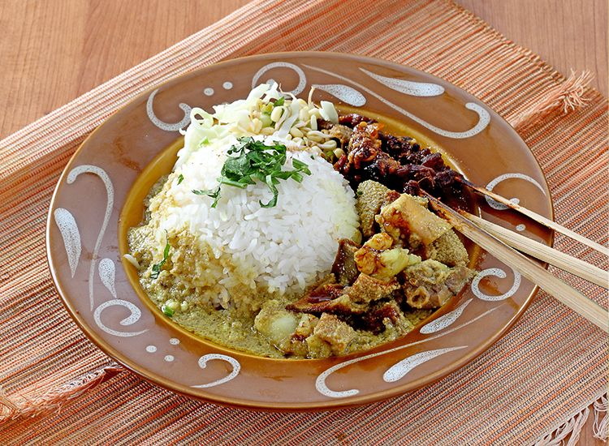
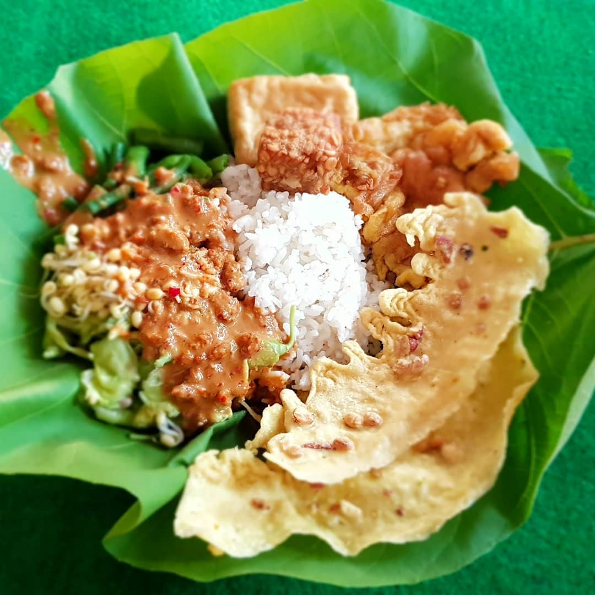
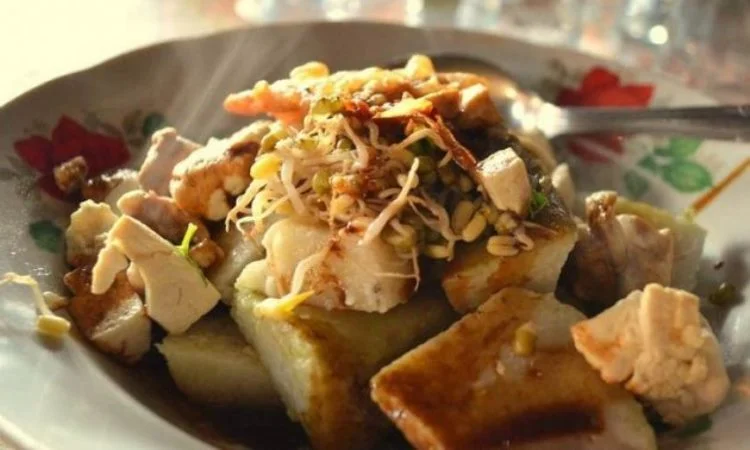

Nasi Becek
Nasi Becek merupakan nasi legendaris dari Nganjuk yang sudah ada sejak tahun 1940. Tapi uniknya, tidak ada orang yang tahu siapa yang kali pertama mengawali berdagangan Nasi Becek. Namun sejak tahun itu hingga masa sekarang ini, Nasi Becek masih menjadi menu kuliner terfavorit di Nganjuk. Baik dari para wisatawan yang berkunjung, ataupun orang-orang Nganjuk Asli.
Memiliki kuah yang berwarna kuning serta campuran santan, sekilas penampilan Nasi Becek ini sama seperti soto daging. Padahal pada saat mencicipinya, akan terasa berbeda dengan soto daging. Penyajian Nasi Becek ini juga selalu disandingkan bersamaan dengan sambal kacang khas nganjuk yang tidak kalah sedap.
Sensasi rasa santan yang bertemu dengan lemak kambing dan wangi seledri ini akan terasa nikmat dengan ditambahkan sari jeruk nipis yang menyegarkan. Untuk Anda yang tidak terlalu senang dengan aroma daging kambing tidak perlu khawatir. Pasalnya, pada Nasi Becek ini juga diberikan rasa jeruk nipis yang bisa menjadi penetralisir aroma kambing yang kurang sedap.
Nasi Pecel
Jika sebelumnya membahas Nasi Becek, kali ini akan membahas mengenai nasi pecel ciri khas Nganjuk yang tidak kalah lezatnya. Jika dilihat sekilas, nasi pecel ini memang tidak memiliki perbedaan dengan nasi pecel biasanya yang sering Anda makan diwarung-warung pinggiran jalan.
Namun ternyata, perbedaannya ada pada penambahan sayur yang disajikan. Lebih tepatnya ada penambahan sayuran seperti kembang turi. Selain itu pada cara penyajiannya yaitu dengan dilumuri sambel kuah kacang serta tempe goreng sebagai lauk pelengkap. Untuk cita rasanya sendiri juga adanya ciri khas yang berbeda jika dibandingkan dengan sambel pecel lainnya.
Tepo Mbah Umbruk
Kuliner yang berasal dari Nganjuk selanjutnya adalah Tepo Mbah Umbruk. Kudapan lezat ini dibuat dengan proses yang sama seperti lontong. Terlebih lagi Tepo Mbah Umbuk ini dibungkus dengan menggunakan daun pisang yang pastinya akan memiliki aroma yang harum dan menggoda.
Untuk bentuknya, Tepo Mbah Umbruk berbentuk tidak terlalu jauh seperti lontong. Namun yang membedakan, yaitu pada bentuk daun pisang yang diselimuti. Yang mana pada makanan khas Nganjuk ini diselimuti dengan daun pisang yang berbentuk kerucut serta bentuknya yang sedikit miring.
Saran penyajiannya yaitu bisa disajikan dengan kacang tolo atau kacang panjang yang diambil hanya bijinya saja. Makanan khas Nganjuk ini juga dimasak dengan bumbu khas yang pastinya membuat cita rasanya semakin lezat dan menggugah selera Anda untuk dapat mencicipi makanan yang satu ini.